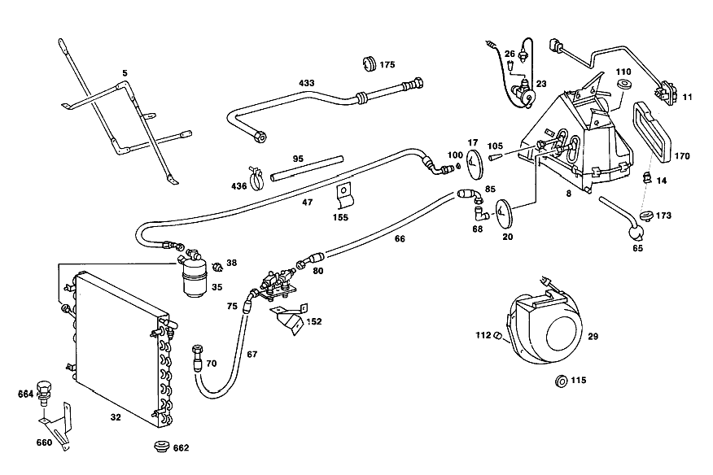

| № | Артикул | Название | Кол. | Примечание | Ограничение |
|---|---|---|---|---|---|
| 5 | A 107 620 04 85 | РАСПОРКА | - | Z 55.807/04, Z 55.807/05, Z 55.807/06 | |
| 5 | A 107 620 02 85 | Распорка | 1 | МЕЖДУ УСИЛИТ. И ТРАВЕРСОЙ Z 55.807/04, Z 55.807/05, Z 55.807/06 | |
| 66 | A 000 997 23 52 | Шланг | 1 | N.W.: 13 6000 MM Z 55.807/01, Z 55.807/02, Z 55.807/03 [036] LESS HOSE CONNECTIONS | |
| 67E | A 000 997 35 52 | ШЛАНГ | - | Z 55.807/01, Z 55.807/03, Z 55.807/04, Z 55.807/05, Z 55.807/06 | |
| 67E | A 018 997 18 82 | ШЛАНГ | - | Z 55.807/01, Z 55.807/03, Z 55.807/04, Z 55.807/05, Z 55.807/06 | |
| 67E | A 018 997 59 82 | ШЛАНГ | - | Z 55.807/01, Z 55.807/03, Z 55.807/04, Z 55.807/05, Z 55.807/06 | |
| 67E | A 000 997 17 52 | Шланг | 1 | N.W.: 8 5250 MM Z 55.807/01, Z 55.807/02, Z 55.807/03, Z 55.807/04, Z 55.807/05, Z 55.807/06 [036] LESS HOSE CONNECTIONS | |
| 95 | N 040621 030200 | Изоляционный шланг | NB | *** 2 Z 55.807/03 [404] ЗАКАЗЫВАТЬ ПОГОННЫМИ МЕТРАМИ | |
| 380 | A 107 830 14 96 | Шланг | 1 | КОМПРЕССОР К КОНДЕНСАТОРУ Z 55.807/03 [037] USED ON SUBSEQUENT INSTALLATION OF AIR CONDITIONER | |
| 384 | A 107 830 20 15 | ТРУБОПРОВОД | 1 | КОМПРЕССОР К КОНДЕНСАТОРУ Z 55.807/03 | |
| 384 | A 107 830 20 15 | ТРУБОПРОВОД | 1 | КОМПРЕССОР К КОНДЕНСАТОРУ Z 55.807/05 | |
| 386 | A 107 830 24 15 | Провод | 1 | ДРЕНАЖНОЕ ТОПЛИВО Z 55.807/03, Z 55.807/04, Z 55.807/05, Z 55.807/06 | |
| 392 | A 000 835 66 98 | уплотнение | 1 | КОМПРЕССОР К КОНДЕНСАТОРУ Z 55.807/03, Z 55.807/04, Z 55.807/05, Z 55.807/06 | |
| 392 | A 000 835 66 98 | уплотнение | 1 | FROM LIQUID TANK TO EVAPORATOR Z 55.807/03, Z 55.807/04, Z 55.807/05, Z 55.807/06 | |
| 394 | A 000 835 65 98 | уплотнение | 1 | FROM LIQUID TANK TO EVAPORATOR Z 55.807/03, Z 55.807/04, Z 55.807/05, Z 55.807/06 | |
| 396 | A 107 830 00 96 | Шланг | 1 | ИСПАРИТЕЛЬ К КОМПРЕССОРУ Рулевое управление: Влево Z 55.807/03 [037] USED ON SUBSEQUENT INSTALLATION OF AIR CONDITIONER | |
| 396 | A 107 830 18 15 | Провод | 1 | ИСПАРИТЕЛЬ К КОМПРЕССОРУ Рулевое управление: Влево Z 55.807/03 [037] USED ON SUBSEQUENT INSTALLATION OF AIR CONDITIONER | |
| 396 | A 107 830 18 15 | Провод | 1 | ИСПАРИТЕЛЬ К КОМПРЕССОРУ Z 55.807/05, Z 55.807/06 | |
| 413 | A 107 830 14 14 | ДЕРЖАТЕЛЬ | 1 | КОМПРЕССОР К КОНДЕНСАТОРУ Z 55.807/03, Z 55.807/04, Z 55.807/05, Z 55.807/06 [402] БОЛЬШЕ НЕ ПОСТАВЛЯЕТСЯ | |
| 413 | A 107 830 10 14 | ДЕРЖАТЕЛЬ | 1 | EVAPORATOR\-TO\-COMPRESSOR LINE TO WHEEL ARCH PANEL Z 55.807/03 [037] USED ON SUBSEQUENT INSTALLATION OF AIR CONDITIONER | |
| 413 | A 107 830 10 14 | ДЕРЖАТЕЛЬ | 1 | EVAPORATOR\-TO\-COMPRESSOR LINE TO WHEEL ARCH PANEL Z 55.807/05 | |
| 413 | A 107 835 20 14 | ДЕРЖАТЕЛЬ | 1 | EVAPORATOR\-TO\-COMPRESSOR LINE TO WHEEL ARCH PANEL Z 55.807/03, Z 55.807/05 | |
| 419 | A 107 835 00 91 | ХОМУТ | 1 | EVAPORATOR\-TO\-COMPRESSOR LINE TO WHEEL ARCH PANEL Z 55.807/03 [037] USED ON SUBSEQUENT INSTALLATION OF AIR CONDITIONER | |
| 423 | N 000137 010201 | Пружинная шайба | 1 | EVAPORATOR\-TO\-COMPRESSOR LINE TO WHEEL ARCH PANEL Z 55.807/05 | |
| 425 | N 914126 006006 | Винт | 1 | M6 X 20 Z 55.807/03, Z 55.807/05 | |
| 427 | N 913017 006000 | Гайка | - | M6 Z 55.807/03, Z 55.807/05 | |
| 427 | A 000 990 43 37 | Шестигранная гайка | - | M6 Z 55.807/03, Z 55.807/05 | |
| 427 | N 913023 006001 | Гайка | 1 | M6 Z 55.807/03, Z 55.807/05 | |
| 433 | A 107 830 26 15 | Провод | 1 | FROM LIQUID TANK TO EVAPORATOR Z 55.807/01, Z 55.807/02, Z 55.807/03, Z 55.807/04, Z 55.807/05, Z 55.807/06 | |
| 436 | A 000 995 73 44 | ХОМУТ | 2 | FROM LIQUID TANK TO EVAPORATOR Z 55.807/01, Z 55.807/02, Z 55.807/03, Z 55.807/04, Z 55.807/05, Z 55.807/06 | |
| 438 | A 107 830 25 45 | КАНАЛ ВОЗДУШНЫЙ | 1 | СЕРЕДИНА Z 55.807/03 [037] USED ON SUBSEQUENT INSTALLATION OF AIR CONDITIONER [048] UP TO CHASSIS: 107.023 000188 107.023 006276 107.044 003398 | |
| 440 | A 107 833 01 20 | Соединительная тяга | 1 | Z 55.807/03 [037] USED ON SUBSEQUENT INSTALLATION OF AIR CONDITIONER [048] UP TO CHASSIS: 107.023 000188 107.023 006276 107.044 003398 | |
| 442 | A 000 994 91 45 | предохранитель | 2 | Z 55.807/03 [037] USED ON SUBSEQUENT INSTALLATION OF AIR CONDITIONER [048] UP TO CHASSIS: 107.023 000188 107.023 006276 107.044 003398 | |
| 444 | A 000 800 11 75 | Исполнительный элемент | 2 | Z 55.807/03, Z 55.807/04 [022] FROM CHASSIS: 107.023 005571 107.024 000703 107.043 009566 107.044 009558 | |
| 446 | A 107 805 03 74 | Тяга переключения передач | 2 | Z 55.807/03, Z 55.807/04 | |
| 448 | N 912001 004000 | Механический фиксатор | 2 | Z 55.807/03, Z 55.807/04 | |
| 450 | A 107 805 00 14 | Держатель | 1 | СЛЕВА Z 55.807/03, Z 55.807/04 | |
| 453 | A 107 805 02 14 | Держатель | 1 | СПРАВА Z 55.807/03, Z 55.807/04 | |
| 457 | N 007981 005209 | Шуруп | 4 | B5,5X16 Z 55.807/03, Z 55.807/04 | |
| 461 | N 000137 006204 | Пружинная шайба | 4 | Z 55.807/03, Z 55.807/04 | |
| 463 | A 000 994 20 60 | ПРЕДОХРАНИТЕЛЬ | - | Z 55.807/03, Z 55.807/04 [415] ПРИМЕЧ. ПО ЗАМЕНЕ ПРИМЕНИМО ТОЛЬКО ДЛЯ СТОЯЩИХ РЯДОМ ПОЗИЦИЙ | |
| 463 | N 918002 004001 | Пружинный зажим | 1 | Z 55.807/03, Z 55.807/04 | |
| 465 | A 000 994 19 60 | ПРЕДОХРАНИТЕЛЬ | - | Z 55.807/03, Z 55.807/04 [415] ПРИМЕЧ. ПО ЗАМЕНЕ ПРИМЕНИМО ТОЛЬКО ДЛЯ СТОЯЩИХ РЯДОМ ПОЗИЦИЙ | |
| 465 | N 918002 004000 | Пружинный зажим | 1 | Z 55.807/03, Z 55.807/04 | |
| 467 | A 117 078 01 45 | Штуцер ответвления | 1 | Z 55.807/03, Z 55.807/04 | |
| 471 | A 007 997 61 82 | Шланг | 0 | 9X2.75 MM Z 55.807/01, Z 55.807/02, Z 55.807/03, Z 55.807/04, Z 55.807/05, Z 55.807/06 [404] ЗАКАЗЫВАТЬ ПОГОННЫМИ МЕТРАМИ | |
| 471 | A 007 997 61 82 | - Шланг | 3 | BETWEEN VACUUM TANK AND SWITCH 30 MM LONG; 9X2.75 MM Z 55.807/03, Z 55.807/04 [404] ЗАКАЗЫВАТЬ ПОГОННЫМИ МЕТРАМИ | |
| 471 | A 007 997 61 82 | - Шланг | 4 | BETWEEN VACUUM SWITCH AND ELEMENT 30 MM LONG; 9X2.75 MM Z 55.807/03, Z 55.807/04 [404] ЗАКАЗЫВАТЬ ПОГОННЫМИ МЕТРАМИ [069] UP TO CHASSIS: 107.022 005057 107.023 012435 107.024 021499 107.026 000011 107.042 004082 107.043 013527 107.044 046520 | |
| 471 | A 007 997 61 82 | - Шланг | 4 | AT VACUUM ELEMENT 50 MM LONG; 9X2.75 MM Z 55.807/03, Z 55.807/04 [404] ЗАКАЗЫВАТЬ ПОГОННЫМИ МЕТРАМИ [069] UP TO CHASSIS: 107.022 005057 107.023 012435 107.024 021499 107.026 000011 107.042 004082 107.043 013527 107.044 046520 | |
| 471 | A 007 997 61 82 | - Шланг | 2 | TO VACUUM ELEMENT 50mm; 9X2.75 MM Z 55.807/03, Z 55.807/04 [404] ЗАКАЗЫВАТЬ ПОГОННЫМИ МЕТРАМИ [070] FROM CHASSIS: 107.022 005058 107.023 012436 107.024 021500 107.026 000012 107.042 004083 107.043 013528 107.044 046521 | |
| 471 | A 007 997 61 82 | - Шланг | 3 | AT VACUUM SWITCH 300 MM LONG; 9X2.75 MM Z 55.807/03, Z 55.807/04 [404] ЗАКАЗЫВАТЬ ПОГОННЫМИ МЕТРАМИ | |
| 473 | A 005 997 59 82 | ТРУБОПРОВОД | 0 | БЕЛЫЙ Z 55.807/01, Z 55.807/02, Z 55.807/03, Z 55.807/04, Z 55.807/05, Z 55.807/06 [404] ЗАКАЗЫВАТЬ ПОГОННЫМИ МЕТРАМИ | |
| 473 | A 005 997 59 82 | - ТРУБОПРОВОД | 1 | THREE\-WAY VALVE TO SUPPLY TANK AND TO SWITCH 500 MM Z 55.807/03, Z 55.807/04 [404] ЗАКАЗЫВАТЬ ПОГОННЫМИ МЕТРАМИ | |
| 475 | A 008 997 83 82 | ШЛАНГ | 0 | СВЕТЛО\-ЗЕЛЕНЫЙ Z 55.807/01, Z 55.807/02, Z 55.807/03, Z 55.807/04, Z 55.807/05, Z 55.807/06 [404] ЗАКАЗЫВАТЬ ПОГОННЫМИ МЕТРАМИ | |
| 475 | A 008 997 83 82 | - ШЛАНГ | 2 | SWITCH TO VACUUM ELEMENT 360 MM Z 55.807/03 | |
| 476 | A 000 997 64 52 | Шланг | 0 | MEDIUM GREEN/ORANGE Z 55.807/01, Z 55.807/02, Z 55.807/03, Z 55.807/04, Z 55.807/05, Z 55.807/06 [404] ЗАКАЗЫВАТЬ ПОГОННЫМИ МЕТРАМИ | |
| 476 | A 000 997 64 52 | Шланг | 1 | FROM TEMPERATURE SWITCH TO Y\-SHAPE DISTRIBUTOR ON LEFT VACUUM ELEMENT 620mm Z 55.807/03, Z 55.807/04 | |
| 476 | A 000 997 64 52 | Шланг | 1 | FROM Y\-SHAPE DISTRIBUTOR AT LEFT VACUUM ELEMENT TO RIGHT VACUUM ELEMENT 780 MM Z 55.807/03, Z 55.807/04 | |
| 477 | A 008 997 84 82 | ШЛАНГ | - | Z 55.807/01, Z 55.807/02, Z 55.807/03, Z 55.807/04, Z 55.807/05, Z 55.807/06 | |
| 477 | A 008 997 85 82 | Шланг | 0 | ЗЕЛЁНЫЙ (MITTELGRUEN) Z 55.807/01, Z 55.807/02, Z 55.807/03, Z 55.807/04, Z 55.807/05, Z 55.807/06 [404] ЗАКАЗЫВАТЬ ПОГОННЫМИ МЕТРАМИ | |
| 477 | A 008 997 85 82 | - Шланг | 1 | FROM Y\-SHAPE DISTRIBUTOR TO SUPPLY TANK 600 MM Z 55.807/03 | |
| 477 | A 008 997 85 82 | - Шланг | 1 | Y\-SHAPE DISTRIBUTOR, VACUUM SWITCH CONNECTION 1200 MM Z 55.807/03 | |
| 479 | A 000 997 07 52 | ШЛАНГ | 0 | MEDIUM GREEN/YELLOW Z 55.807/01, Z 55.807/02, Z 55.807/03, Z 55.807/04, Z 55.807/05, Z 55.807/06 [404] ЗАКАЗЫВАТЬ ПОГОННЫМИ МЕТРАМИ | |
| 479 | A 000 997 07 52 | ШЛАНГ | 1 | Y\-SHAPE DISTRIBUTOR, VACUUM SWITCH CONNECTION 1450 MM Z 55.807/03 | |
| 481 | A 186 995 02 20 | хомут | - | Z 55.807/03, Z 55.807/04 | |
| 481 | N 072571 001035 | Хомут | - | Z 55.807/03, Z 55.807/04 | |
| 481 | A 127 995 00 20 | хомут | 1 | Z 55.807/03, Z 55.807/04 | |
| 482 | N 007976 004205 | Шуруп | 1 | Z 55.807/03, Z 55.807/04 | |
| 484 | A 008 997 85 82 | Шланг | 0 | ТЕМНО\-ЗЕЛЕНЫЙ Z 55.807/01, Z 55.807/02, Z 55.807/03, Z 55.807/04, Z 55.807/05, Z 55.807/06 [404] ЗАКАЗЫВАТЬ ПОГОННЫМИ МЕТРАМИ | |
| 484 | A 008 997 85 82 | - Шланг | 2 | FROM SWITCH TO VACUUM ELEMENT,360 MM Z 55.807/03 | |
| 486 | A 000 997 65 52 | Шланг | 0 | MEDIUM GREEN/LIGHT BLUE Z 55.807/01, Z 55.807/02, Z 55.807/03, Z 55.807/04, Z 55.807/05, Z 55.807/06 [404] ЗАКАЗЫВАТЬ ПОГОННЫМИ МЕТРАМИ | |
| 486 | A 000 997 65 52 | Шланг | 2 | FROM TEMPERATURE SWITCH TO Y\-SHAPE DISTRIBUTOR ON LEFT VACUUM ELEMENT 620mm Z 55.807/03, Z 55.807/04 | |
| 486 | A 000 997 65 52 | Шланг | 1 | Y\-SHAPE DISTRIBUTOR, VACUUM SWITCH CONNECTION 780 MM Z 55.807/03, Z 55.807/04 | |
| 488 | A 107 820 01 15 | ЭЛ. ПРОВОД | 1 | Рулевое управление: Влево Z 55.807/03 [041] UP TO CHASSIS: 107.023 000428 107.043 006833 107.044 004103 FROM CHASSIS SEE SA 55962 | |
| 488 | A 107 820 02 15 | ЭЛ. ПРОВОД | 1 | Рулевое управление: Вправо Z 55.807/03 [041] UP TO CHASSIS: 107.023 000428 107.043 006833 107.044 004103 FROM CHASSIS SEE SA 55962 | |
| 491 | A 005 545 13 28 | ШТЕКЕР | - | Z 55.807/03, Z 55.807/04 | |
| 491 | A 006 545 80 28 | CONTACT SUPPORT | 2 | ШЕСТИПОЛЮСНЫЙ; 6\-PIN Z 55.807/03, Z 55.807/04 [041] UP TO CHASSIS: 107.023 000428 107.043 006833 107.044 004103 FROM CHASSIS SEE SA 55962 | |
| 495 | A 002 545 49 28 | ШТЕКЕР | - | Z 55.807/03, Z 55.807/04 | |
| 495 | A 008 545 37 28 | Сцепление, механическое | 2 | ДВУХПОЛЮСНЫЙ; 2\-PIN Z 55.807/03, Z 55.807/04 [041] UP TO CHASSIS: 107.023 000428 107.043 006833 107.044 004103 FROM CHASSIS SEE SA 55962 | |
| 496 | A 008 545 20 28 | Нижняя часть корпуса | 1 | ОДНОКОНТАКТ.; 1\-PIN Z 55.807/03, Z 55.807/04 [041] UP TO CHASSIS: 107.023 000428 107.043 006833 107.044 004103 FROM CHASSIS SEE SA 55962 | |
| 498 | A 005 545 17 28 | ШТЕКЕР | - | Z 55.807/03 | |
| 498 | A 011 545 59 28 | Сцепление, механическое | 1 | Z 55.807/03 [041] UP TO CHASSIS: 107.023 000428 107.043 006833 107.044 004103 FROM CHASSIS SEE SA 55962 | |
| 502 | A 005 545 18 28 | Штекерная втулка | 2 | Z 55.807/03 [041] UP TO CHASSIS: 107.023 000428 107.043 006833 107.044 004103 FROM CHASSIS SEE SA 55962 | |
| 506 | A 000 545 83 34 | предохранитель | 1 | Z 55.807/03, Z 55.807/04 [041] UP TO CHASSIS: 107.023 000428 107.043 006833 107.044 004103 FROM CHASSIS SEE SA 55962 | |
| 508 | A 001 542 02 19 | Реле | 1 | Z 55.807/03, Z 55.807/04 [041] UP TO CHASSIS: 107.023 000428 107.043 006833 107.044 004103 FROM CHASSIS SEE SA 55962 | |
| 511 | A 107 820 08 92 | КНОПКА | 1 | Z 55.807/03, Z 55.807/04 [024] FROM CHASSIS: 107.023 001921 107.024 000006 107.043 008152 107.044 005794, EXCEPT FOR: 005830 | |
| 511 | A 107 820 12 92 | Кнопка | 1 | Z 55.807/03, Z 55.807/04 | |
| 515 | N 072601 012230 | - Лампа накаливания | 1 | 12V\-1.2W Z 55.807/03, Z 55.807/04 | |
| 517 | A 001 544 01 94 | - Лампа накаливания | - | Z 55.807/03, Z 55.807/04 | |
| 517 | A 000 825 00 94 | - Лампа накаливания | 1 | Z 55.807/03, Z 55.807/04 [067] UP TO CHASSIS: 107.022 005932 107.023 012894 107.024 023726 107.026 000305 1079042 004914 107.043 013422 107.044 050597 | |
| 519 | A 115 833 00 89 | Декоративная розетка | 1 | Z 55.807/03 [023] UP TO CHASSIS: 107.023 001920 107.024 000005 107.043 008151 107.044 005793, ALSO INSTALLED ON: 005830 | |
| 519 | A 115 833 02 89 | Декоративная розетка | 1 | Z 55.807/03, Z 55.807/04 [024] FROM CHASSIS: 107.023 001921 107.024 000006 107.043 008152 107.044 005794, EXCEPT FOR: 005830 | |
| 523 | N 009045 012002 | Пруж. стопорное кольцо | 1 | Z 55.807/03, Z 55.807/04 | |
| 526 | A 107 821 00 51 | Переключатель | 1 | Z 55.807/03, Z 55.807/04 | |
| 528 | A 001 835 29 06 | Переключатель | 1 | Z 55.807/03 | |
| 531 | A 107 821 00 65 | КОРПУС | 1 | Z 55.807/03, Z 55.807/04 [025] UP TO CHASSIS: 107.024 000005 107.044 005793 | |
| 531 | A 107 821 01 65 | Корпус | 1 | Z 55.807/03, Z 55.807/04 [026] FROM CHASSIS: 107.024 000006 107.044 005794 | |
| 533 | A 002 545 24 28 | ШТЕКЕР | - | Z 55.807/03, Z 55.807/04 | |
| 533 | A 009 545 40 28 | Сцепление, механическое | 1 | ДВОЙН.; 2\-PIN Z 55.807/03, Z 55.807/04 | |
| 536 | A 094 988 15 00 | Скоба | 1 | Z 55.807/03, Z 55.807/04 | |
| 537 | A 107 833 03 73 | Табличка | 1 | Z 55.807/03, Z 55.807/04 | |
| 538 | A 107 830 07 62 | КОЖУХ СИСТЕМЫ ОТОПЛЕНИЯ | - | Z 55.807/03 | |
| 538 | A 107 830 16 62 | КОЖУХ СИСТЕМЫ ОТОПЛЕНИЯ | - | Z 55.807/03, Z 55.807/04 | |
| 538 | A 107 830 17 62 | Короб системы отопления | 1 | Z 55.807/03, Z 55.807/04 | |
| 540 | A 107 830 28 62 | КОЖУХ СИСТЕМЫ ОТОПЛЕНИЯ | 1 | Z 55.807/05, Z 55.807/06 | |
| 540 | A 107 830 32 62 | Короб кондиционера | 1 | Z 55.807/05, Z 55.807/06 | |
| 543 | A 116 830 00 58 | - ИСПАРИТЕЛЬ | - | Z 55.807/03, Z 55.807/04, Z 55.807/05, Z 55.807/06 | |
| 543 | A 107 830 00 58 | - ИСПАРИТЕЛЬ | - | Z 55.807/03, Z 55.807/04, Z 55.807/05, Z 55.807/06 | |
| 543 | A 000 830 48 58 | - Испаритель | 1 | Z 55.807/03, Z 55.807/04, Z 55.807/05, Z 55.807/06 | |
| 545 | A 115 835 00 72 | - КЛАПАН | 1 | Z 55.807/03, Z 55.807/04, Z 55.807/05, Z 55.807/06 | |
| 546 | A 108 835 02 47 | - Сетка | 1 | Z 55.807/03, Z 55.807/04, Z 55.807/05, Z 55.807/06 | |
| 547 | A 002 821 24 51 | - ВЫКЛЮЧАТЕЛЬ | 1 | ИСПАРИТЕЛЬ Z 55.807/05, Z 55.807/06 | |
| 548 | A 116 821 00 76 | - ШУМОИЗОЛЯЦИЯ | 1 | РЕЛЕ ТЕМПЕРАТУРЫ Z 55.807/05, Z 55.807/06 [402] БОЛЬШЕ НЕ ПОСТАВЛЯЕТСЯ | |
| 550 | A 126 830 13 72 | - ДАТЧИК ТЕМПЕРАТУРЫ | 2 | Z 55.807/05, Z 55.807/06 | |
| 552 | A 000 987 13 41 | - КОЛЬЦО РЕЗИНОВОЕ | 2 | Z 55.807/05, Z 55.807/06 | |
| 554 | N 007981 003203 | - Шуруп | 2 | Z 55.807/05, Z 55.807/06 | |
| 556 | A 002 988 48 78 | Скоба | 1 | ДАТЧИК ТЕМПЕРАТУРЫ Z 55.807/05, Z 55.807/06 | |
| 558 | N 000933 005075 | Винт | - | Z 55.807/03, Z 55.807/04 | |
| 558 | N 304017 005002 | Винт с 6-гранной головкой | 2 | M5X16 Z 55.807/03, Z 55.807/04 | |
| 560 | N 000127 005203 | Пружинное кольцо | 2 | Z 55.807/03 | |
| 562 | A 000 835 03 70 | Конденсатор | 1 | Z 55.807/03, Z 55.807/05 [068] 107.025,026,045,046 SEE SA 56106/6/9 | |
| 564 | A 107 830 17 70 | Конденсатор | 1 | Z 55.807/04, Z 55.807/05, Z 55.807/06 | |
| 566 | A 000 835 22 71 | Бак | 1 | Z 55.807/03 [044] UP TO CHASSIS: 107.022 002802 107.023 011264 107.024 015124 107.042 002187 107.043 012638 107.044 035459 | |
| 566 | A 107 830 04 83 | БАЧОК | - | Z 55.807/03 [045] FROM CHASSIS: 107.022 002803 107.023 011265 107.024 015125 107.042 002188 107.043 012639 107.044 035460 [053] UP TO CHASSIS: 107.022 003970 107.023 011897 107.024 018637 107.042 003098 107.043 013099 107.044 041611 | |
| 566 | A 107 830 06 83 | БАЧОК | - | Z 55.807/03 [092] ИСПОЛЬЗ.СТАР.НОМЕР ДЕТАЛИ ПРИ ШАССИ 107.042 012398 107.045 011045 107.046 001240 | |
| 566 | A 107 830 11 83 | БАЧОК | 1 | Z 55.807/03, Z 55.807/05 [054] FROM CHASSIS: 107.022 003971 107.023 011898 107.024 018638 107.042 003099 107.043 013100 107.044 041612 | |
| 570 | A 107 830 14 83 | Бак | 1 | Z 55.807/03, Z 55.807/04, Z 55.807/05, Z 55.807/06 | |
| 572 | A 000 830 32 84 | - Клапан | - | (КЛАПАН ИЗБЫТОЧ.ДАВЛ.) TO 107 830 10 83,107 830 11 83 Z 55.807/01, Z 55.807/02, Z 55.807/03, Z 55.807/04, Z 55.807/05, Z 55.807/06 [403] НЕ УСТАНОВЛЕНО | |
| 574 | A 000 835 00 12 | УГОЛ | 2 | Z 55.807/03 | |
| 576 | A 000 835 02 98 | уплотнение | - | Z 55.807/03, Z 55.807/04, Z 55.807/05, Z 55.807/06 | |
| 576 | A 000 835 65 98 | уплотнение | 1 | ОТ РЕСИВЕРА\-ОСУШИТЕЛЯ К КОНДЕНСАТОРУ Z 55.807/03, Z 55.807/04, Z 55.807/05, Z 55.807/06 | |
| 578 | N 000125 006421 | Шайба | 2 | ОТ РЕСИВЕРА\-ОСУШИТЕЛЯ К КОНДЕНСАТОРУ Z 55.807/03, Z 55.807/04, Z 55.807/05, Z 55.807/06 | |
| 580 | A 094 990 68 10 | Пружинное кольцо | 2 | ОТ РЕСИВЕРА\-ОСУШИТЕЛЯ К КОНДЕНСАТОРУ Z 55.807/03, Z 55.807/04, Z 55.807/05, Z 55.807/06 | |
| 582 | N 000934 006007 | Гайка | 2 | ОТ РЕСИВЕРА\-ОСУШИТЕЛЯ К КОНДЕНСАТОРУ Z 55.807/03, Z 55.807/04, Z 55.807/05, Z 55.807/06 | |
| 584 | A 000 820 80 10 | Регулятор | 1 | НА БАЧКЕ ЖИДКОСТИ Z 55.807/03, Z 55.807/04 | |
| 586 | A 000 546 06 45 | - Защитный колпачок | 2 | Z 55.807/03, Z 55.807/04 [029] UP TO CHASSIS: 107.023 008930 107.024 10/50,12/52 004141 107.024 20/60,22/62 004137 107.024 003812, U.S.A. | |
| 588 | A 000 820 27 10 | Маном. выключатель | 1 | НА БАЧКЕ ЖИДКОСТИ Z 55.807/03, Z 55.807/04 [045] FROM CHASSIS: 107.022 002803 107.023 011265 107.024 015125 107.042 002188 107.043 012639 107.044 035460 [053] UP TO CHASSIS: 107.022 003970 107.023 011897 107.024 018637 107.042 003098 107.043 013099 107.044 041611 | |
| 588 | A 000 820 43 10 | ВЫКЛЮЧАТЕЛЬ | - | Z 55.807/03, Z 55.807/04, Z 55.807/05, Z 55.807/06 [110] FIRST EXHAUST STOCK OF OLD PARTS UP TO IDENT NO. A 052 862 | |
| 588 | A 124 820 59 10 | Переключатель | - | Z 55.807/03, Z 55.807/04, Z 55.807/05, Z 55.807/06 | |
| 588 | A 124 821 36 51 | ВЫКЛЮЧАТЕЛЬ | - | Z 55.807/03, Z 55.807/04, Z 55.807/05, Z 55.807/06 | |
| 588 | A 124 820 83 10 | Переключатель | 1 | НА БАЧКЕ ЖИДКОСТИ Z 55.807/03, Z 55.807/04, Z 55.807/05, Z 55.807/06 [054] FROM CHASSIS: 107.022 003971 107.023 011898 107.024 018638 107.042 003099 107.043 013100 107.044 041612 | |
| 588 | A 002 820 52 10 | ВЫКЛЮЧАТЕЛЬ | - | Z 55.807/03, Z 55.807/04, Z 55.807/05, Z 55.807/06 | |
| 588 | A 004 820 07 10 | ВЫКЛЮЧАТЕЛЬ | - | Z 55.807/03, Z 55.807/04, Z 55.807/05, Z 55.807/06 | |
| 588 | A 004 820 68 10 | Переключатель | 1 | НА БАЧКЕ ЖИДКОСТИ; 16 BAR Z 55.807/03, Z 55.807/04, Z 55.807/05, Z 55.807/06 | |
| 590 | A 123 997 07 40 | - УПЛОТНИТ. КОЛЬЦО | - | Z 55.807/03, Z 55.807/04, Z 55.807/05, Z 55.807/06 | |
| 590 | A 140 997 11 45 | - Уплотнительное кольцо | 1 | 9.0 X 1.8 MM Z 55.807/03, Z 55.807/04, Z 55.807/05, Z 55.807/06 [054] FROM CHASSIS: 107.022 003971 107.023 011898 107.024 018638 107.042 003099 107.043 013100 107.044 041612 | |
| 592 | A 126 820 23 10 | Переключатель | 1 | ПАНЕЛЬ УПРАВЛ. Z 55.807/05, Z 55.807/06 | |
| 594 | A 000 822 07 03 | ОСНОВНОЕ УСТРОЙСТВО | 1 | (THERMOSTAT) HEATER CASE с HEATING WATER PUMP Z 55.807/05, Z 55.807/06 [402] БОЛЬШЕ НЕ ПОСТАВЛЯЕТСЯ | |
| 594 | A 000 822 12 03 | ОСНОВНОЕ УСТРОЙСТВО | 1 | (THERMOSTAT) HEATER CASE с HEATING WATER PUMP Z 55.807/05, Z 55.807/06 | |
| 594 | A 003 820 45 10 | Регулятор температуры | 1 | (THERMOSTAT) HEATER CASE с HEATING WATER PUMP Z 55.807/05, Z 55.807/06 | |
| 596 | N 007976 005202 | Шуруп | 2 | Z 55.807/03, Z 55.807/05, Z 55.807/06 | |
| 598 | A 000 994 73 45 | Пружинная гайка | - | Рулевое управление: Влево Z 55.807/05, Z 55.807/06 | |
| 598 | A 002 994 81 45 | предохранитель | 1 | TEMPERATURE REGULATOR TO AIR CONDITIONING CASE Рулевое управление: Влево Z 55.807/05, Z 55.807/06 | |
| 600 | N 009021 006205 | Шайба | - | Z 55.807/03, Z 55.807/04, Z 55.807/05, Z 55.807/06 | |
| 600 | N 009021 006208 | Шайба | 2 | 6 MM Z 55.807/03, Z 55.807/04, Z 55.807/05, Z 55.807/06 | |
| 602 | N 000933 006102 | Винт | 2 | Z 55.807/03, Z 55.807/04, Z 55.807/05, Z 55.807/06 | |
| 604 | N 000125 006421 | Шайба | 2 | Z 55.807/03, Z 55.807/04, Z 55.807/05, Z 55.807/06 | |
| 606 | A 094 990 68 10 | Пружинное кольцо | 2 | Z 55.807/03, Z 55.807/04, Z 55.807/05, Z 55.807/06 | |
| 608 | N 000934 006007 | Гайка | 2 | Z 55.807/03, Z 55.807/04, Z 55.807/05, Z 55.807/06 | |
| 610 | N 000933 006122 | Винт | - | Z 55.807/03, Z 55.807/04 | |
| 610 | N 304017 006034 | Винт с 6-гранной головкой | 2 | Z 55.807/03, Z 55.807/04 | |
| 613 | A 094 990 68 10 | Пружинное кольцо | 2 | Z 55.807/03, Z 55.807/04 | |
| 616 | N 000125 006421 | Шайба | 2 | Z 55.807/03, Z 55.807/04 | |
| 619 | N 000934 006007 | Гайка | 2 | Z 55.807/03, Z 55.807/04 | |
| 628 | A 107 835 00 83 | РАСПОРКА | 2 | Z 55.807/03 | |
| 631 | N 000933 006102 | Винт | 2 | Z 55.807/03 | |
| 634 | N 000125 006421 | Шайба | 2 | Z 55.807/03 | |
| 637 | A 094 990 68 10 | Пружинное кольцо | 2 | Z 55.807/03 | |
| 641 | N 009021 006205 | Шайба | - | Z 55.807/03 | |
| 641 | N 009021 006208 | Шайба | 1 | 6 MM Z 55.807/03 | |
| 644 | N 000934 006007 | Гайка | 2 | Z 55.807/03 | |
| 647 | N 007976 005202 | Шуруп | 1 | (BLOWER с BRACKET TO FRONT CROSS MEMBER) Z 55.807/03 [032] UP TO CHASSIS: 107.043 003025 107.044 000746 | |
| 649 | A 114 995 02 20 | Крепежный хомут | 2 | BLOWER TO STRUT BETWEEN STIFFENING AND CROSS MEMBER Z 55.807/03 | |
| 652 | N 000933 006103 | Винт | - | Z 55.807/03 | |
| 652 | N 304017 006018 | Винт с 6-гранной головкой | 2 | BLOWER TO STRUT BETWEEN STIFFENING AND CROSS MEMBER; M6X12 Z 55.807/03 | |
| 655 | A 094 990 68 10 | Пружинное кольцо | 2 | BLOWER TO STRUT BETWEEN STIFFENING AND CROSS MEMBER Z 55.807/03 | |
| 658 | N 000125 006421 | Шайба | 2 | BLOWER TO STRUT BETWEEN STIFFENING AND CROSS MEMBER Z 55.807/03 | |
| 660 | A 107 835 19 14 | Держатель | 1 | Z 55.807/01, Z 55.807/02, Z 55.807/03, Z 55.807/04, Z 55.807/05, Z 55.807/06 | |
| 660 | A 107 835 18 14 | Держатель | 1 | Z 55.807/01, Z 55.807/02, Z 55.807/03, Z 55.807/04, Z 55.807/05, Z 55.807/06 | |
| 660 | A 201 835 16 14 | ДЕРЖАТЕЛЬ | 1 | Z 55.807/01, Z 55.807/02, Z 55.807/03, Z 55.807/04, Z 55.807/05, Z 55.807/06 | |
| 662 | A 201 997 03 81 | втулка | 1 | 12 MM Z 55.807/01, Z 55.807/02, Z 55.807/03, Z 55.807/04, Z 55.807/05, Z 55.807/06 | |
| 664 | N 914004 005001 | Винт с неспадающей шайбой | 4 | Z 55.807/01, Z 55.807/02, Z 55.807/03, Z 55.807/04, Z 55.807/05, Z 55.807/06 | |
| 664 | N 914004 005001 | Винт с неспадающей шайбой | 3 | Z 55.807/01, Z 55.807/02, Z 55.807/03, Z 55.807/04, Z 55.807/05, Z 55.807/06 | |
| 666 | A 107 830 00 43 | Клапан | 1 | СЛЕВА Z 55.807/03, Z 55.807/04, Z 55.807/05, Z 55.807/06 | |
| 666 | A 107 830 08 43 | РАСПРЕДЕЛИТЕЛЬ ВОЗДУХА | - | Z 55.807/03, Z 55.807/04, Z 55.807/05, Z 55.807/06 | |
| 666 | A 107 830 00 43 | Клапан | 1 | СПРАВА Z 55.807/03, Z 55.807/04, Z 55.807/05, Z 55.807/06 | |
| 668 | A 107 831 02 98 | - Уплотнение | 2 | Z 55.807/03, Z 55.807/04, Z 55.807/05, Z 55.807/06 | |
| 670 | A 107 831 01 98 | - УПЛОТНИТЕЛЬ | 1 | СЛЕВА Z 55.807/03, Z 55.807/04, Z 55.807/05, Z 55.807/06 | |
| 670 | A 107 831 14 98 | - Уплотнительная рамка | 1 | СПРАВА Z 55.807/03, Z 55.807/04, Z 55.807/05, Z 55.807/06 | |
| 672 | A 003 989 19 85 | - КЛЕЙКАЯ ЛЕНТА | - | Z 55.807/03, Z 55.807/04, Z 55.807/05, Z 55.807/06 | |
| 672 | A 003 989 54 85 | - Уплотнительная лента | 2 | *** 270 MM Z 55.807/03, Z 55.807/04, Z 55.807/05, Z 55.807/06 [404] ЗАКАЗЫВАТЬ ПОГОННЫМИ МЕТРАМИ | |
| 674 | N 007976 004302 | Шуруп | 4 | Z 55.807/03, Z 55.807/04, Z 55.807/05, Z 55.807/06 | |
| 677 | N 006797 005110 | Зубчатая шайба | 4 | Z 55.807/03, Z 55.807/04, Z 55.807/05, Z 55.807/06 | |
| 679 | A 000 997 21 52 | Шланг | 1 | 6000 MM Z 55.807/03 | |
| 693 | A 107 831 05 94 | ШЛАНГ | 1 | Z 55.807/03 | |
| 693 | A 107 830 00 96 | Шланг | 1 | ИСПАРИТЕЛЬ К КОМПРЕССОРУ 800 MM Рулевое управление: Вправо Z 55.807/03 | |
| 693 | A 107 830 19 15 | ТРУБОПРОВОД | 1 | ИСПАРИТЕЛЬ К КОМПРЕССОРУ Рулевое управление: Вправо Z 55.807/03, Z 55.807/04 | |
| 711 | A 107 831 06 94 | ШЛАНГ | - | Z 55.807/03 | |
| 713 | A 000 997 94 68 | СОЕДИНИТЕЛЬ | 1 | 180 DEGREES;I.D.,6 5/8" Z 55.807/03, Z 55.807/04 [402] БОЛЬШЕ НЕ ПОСТАВЛЯЕТСЯ | |
| 716 | A 001 997 19 68 | СОЕДИНИТЕЛЬ | 1 | 150 DEGREES;I.D.,6 3/4" Z 55.807/03, Z 55.807/04 [402] БОЛЬШЕ НЕ ПОСТАВЛЯЕТСЯ | |
| 719 | A 000 997 16 68 | Штуцер шланга | 1 | 135 DEGREES;I.D.,10 3/4" Z 55.807/03 | |
| 722 | A 000 997 18 68 | СОЕДИНИТЕЛЬ | 1 | 150 DEGREES;I.D.,10 3/4" Z 55.807/03 | |
| 722 | A 000 997 54 68 | Штуцер шланга | 1 | 180 DEGREES;I.D.,10 3/4" Z 55.807/03 | |
| 728 | A 000 997 56 68 | Штуцер шланга | 1 | СТО ВОСЕМЬДЕСЯТ ГРАДУСОВ 7/8" N W 13 Z 55.807/03, Z 55.807/04 | |
| 731 | A 000 997 23 68 | Штуцер шланга | 1 | 135 ГРАДУСОВ 7/8" N W 13 Z 55.807/03 | |
| 733 | A 001 997 41 90 | Кабельная стяжка | NB | 7X100 MM Z 55.807/03, Z 55.807/04, Z 55.807/05, Z 55.807/06 | |
| 733 | A 001 997 43 90 | Кабельная стяжка | NB | 9X250 MM Z 55.807/03, Z 55.807/04, Z 55.807/05, Z 55.807/06 | |
| 735 | A 110 782 00 19 | резиновая втулка | 1 | Рулевое управление: Вправо Z 55.807/03, Z 55.807/04 | |
| 737 | A 111 997 23 81 | КАБ. ВТУЛКА | - | Рулевое управление: Вправо Z 55.807/03, Z 55.807/04 | |
| 737 | A 008 997 17 81 | втулка | 1 | Рулевое управление: Вправо Z 55.807/03, Z 55.807/04 | |
| 739 | A 186 997 07 81 | втулка | 1 | Z 55.807/03, Z 55.807/04 [402] БОЛЬШЕ НЕ ПОСТАВЛЯЕТСЯ | |
| 739 | A 321 997 00 81 | втулка | - | Z 55.807/03, Z 55.807/04 | |
| 739 | A 335 997 00 81 | втулка | 1 | Z 55.807/03, Z 55.807/04, Z 55.807/05, Z 55.807/06 | |
| 739 | A 000 997 28 81 | Проходная втулка | 2 | Z 55.807/03, Z 55.807/04 | |
| 741 | A 107 831 10 41 | ПАНЕЛЬ | 2 | Z 55.807/03, Z 55.807/04 [402] БОЛЬШЕ НЕ ПОСТАВЛЯЕТСЯ [033] FROM CHASSIS: 107.023 000189 107.043 006276 107.044 003398 | |
| 744 | A 116 835 01 97 | Шланг | 4 | Z 55.807/05, Z 55.807/06 | |
| 744 | A 116 835 01 97 | Шланг | 4 | Z 55.807/03, Z 55.807/04 | |
| 746 | A 116 835 02 68 | ШТУЦЕР | 2 | Z 55.807/03, Z 55.807/04 [042] FOR COUTRIES HAVING A HIGH ATMOSPHERIC HUMIDITY;FOR REPAIR PURPOSES ONLY | |
| 749 | A 003 988 08 78 | СКОБА | 1 | Рулевое управление: Влево Z 55.807/03 [055] UP TO CHASSIS: 107.023 011737 107.024 017868 107.043 012978 107.044 040252 | |
| 751 | A 107 997 02 81 | втулка | 4 | Z 55.807/03, Z 55.807/04, Z 55.807/05, Z 55.807/06 | |
| 753 | A 107 835 06 97 | ШЛАНГ | 1 | Рулевое управление: Влево Z 55.807/03, Z 55.807/04, Z 55.807/05, Z 55.807/06 | |
| 755 | N 007985 006126 | Винт | 1 | Z 55.807/03, Z 55.807/04 | |
| 756 | N 000137 006204 | Пружинная шайба | 1 | Z 55.807/03, Z 55.807/04 | |
| 757 | N 009021 006205 | Шайба | - | Z 55.807/03, Z 55.807/04 | |
| 757 | N 009021 006208 | Шайба | 1 | 6 MM Z 55.807/03 | |
| 773 | A 110 995 01 65 | хомут | 1 | 19 MM Z 55.807/03 [066] FROM CHASSIS: 107.023 012440 107.024 021513 107.043 013529 107.044 046543 | |
| 776 | A 617 187 01 90 | Проставка | 1 | 18 MM Z 55.807/03 [066] FROM CHASSIS: 107.023 012440 107.024 021513 107.043 013529 107.044 046543 | |
| 779 | A 000 992 03 05 | Гильза с буртиком | 1 | VACUUM LINE TO FRONT STIFFENING Z 55.807/03 | |
| 779 | A 000 992 03 05 | Гильза с буртиком | 1 | VACUUM LINE TO FRONT STIFFENING Z 55.807/05 | |
| 783 | A 000 997 31 81 | Проходная втулка | 1 | VACUUM LINE TO FRONT STIFFENING Z 55.807/03 | |
| 783 | A 000 997 31 81 | Проходная втулка | 1 | VACUUM LINE TO FRONT STIFFENING Z 55.807/05 | |
| 787 | N 914001 006010 | Винт с неспадающей шайбой | 1 | VACUUM LINE TO FRONT STIFFENING Z 55.807/03 | |
| 787 | N 914001 006010 | Винт с неспадающей шайбой | 1 | VACUUM LINE TO FRONT STIFFENING Z 55.807/05 | |
| 791 | N 914112 006000 | Винт | 1 | VACUUM LINE TO FRONT STIFFENING Z 55.807/03 | |
| A 116 230 01 54 | КОМПЛЕКТ ДЛЯ ПЕРЕОБОРУД. | - | RANGE OF DELIVERY,ENGINE PARTS SA 12262 Z 55.807/03 [402] БОЛЬШЕ НЕ ПОСТАВЛЯЕТСЯ [412] БОЛЬШЕ НЕ ПОСТАВЛЯЕТСЯ, ЗАКАЗЫВАТЬ ОТДЕЛЬНЫЕ ДЕТАЛИ | ||
| A 107 830 02 60 | КЛИМАТИЧЕСКАЯ СИСТЕМА | - | Z 55.807/03 [037] USED ON SUBSEQUENT INSTALLATION OF AIR CONDITIONER | ||
| A 107 830 08 60 | КЛИМАТИЧЕСКАЯ СИСТЕМА | - | Z 55.807/03 | ||
| A 107 830 05 60 | КЛИМАТИЧЕСКАЯ СИСТЕМА | 1 | RANGE OF DELIVERY,REFRIGERATION PARTS Z 55.807/03 [402] БОЛЬШЕ НЕ ПОСТАВЛЯЕТСЯ [412] БОЛЬШЕ НЕ ПОСТАВЛЯЕТСЯ, ЗАКАЗЫВАТЬ ОТДЕЛЬНЫЕ ДЕТАЛИ [037] USED ON SUBSEQUENT INSTALLATION OF AIR CONDITIONER [095] ONLY FOR MODELS 107.023,024,043,044 | ||
| A 107 830 11 60 | КЛИМАТИЧЕСКАЯ СИСТЕМА | 1 | RANGE OF DELIVERY,REFRIGERATION PARTS Z 55.807/03 [402] БОЛЬШЕ НЕ ПОСТАВЛЯЕТСЯ [412] БОЛЬШЕ НЕ ПОСТАВЛЯЕТСЯ, ЗАКАЗЫВАТЬ ОТДЕЛЬНЫЕ ДЕТАЛИ [037] USED ON SUBSEQUENT INSTALLATION OF AIR CONDITIONER [096] ONLY FOR MODELS 107.025,026,045,046 | ||
| A 107 830 01 60 | КЛИМАТИЧЕСКАЯ СИСТЕМА | - | RANGE OF DELIVERY,BODY PARTS Z 55.807/03 [402] БОЛЬШЕ НЕ ПОСТАВЛЯЕТСЯ [412] БОЛЬШЕ НЕ ПОСТАВЛЯЕТСЯ, ЗАКАЗЫВАТЬ ОТДЕЛЬНЫЕ ДЕТАЛИ [037] USED ON SUBSEQUENT INSTALLATION OF AIR CONDITIONER [095] ONLY FOR MODELS 107.023,024,043,044 | ||
| A 107 500 01 99 | РЕГУЛИРОВКА ХОЛОСТ. ХОДА | - | ОБЪЕМ ПОСТАВКИ ДЛЯ ДОП.УСТАНОВКИ Z 55.807/03, Z 55.807/04 [412] БОЛЬШЕ НЕ ПОСТАВЛЯЕТСЯ, ЗАКАЗЫВАТЬ ОТДЕЛЬНЫЕ ДЕТАЛИ [037] USED ON SUBSEQUENT INSTALLATION OF AIR CONDITIONER | ||
| A 107 831 04 94 | ШЛАНГ | - | Z 55.807/03 [037] USED ON SUBSEQUENT INSTALLATION OF AIR CONDITIONER | ||
| A 000 997 15 52 | ШЛАНГ | - | Z 55.807/03 | ||
| A 000 997 35 52 | ШЛАНГ | - | Z 55.807/03 | ||
| A 018 997 18 82 | ШЛАНГ | - | Z 55.807/03 | ||
| A 018 997 59 82 | ШЛАНГ | - | Z 55.807/03 | ||
| A 000 997 17 52 | Шланг | 1 | ПОД РАДИАТОРОМ Z 55.807/03 [037] USED ON SUBSEQUENT INSTALLATION OF AIR CONDITIONER | ||
| A 107 800 00 75 | ЭЛЕМЕНТ | - | Z 55.807/03 [021] UP TO CHASSIS: 107.023 005570 107.024 000702 107.043 009565 107.044 009557 | ||
| A 107 800 23 75 | ЭЛЕМЕНТ | - | Z 55.807/03 | ||
| A 000 994 16 60 | ПРЕДОХРАНИТЕЛЬ | - | Z 55.807/03 [415] ПРИМЕЧ. ПО ЗАМЕНЕ ПРИМЕНИМО ТОЛЬКО ДЛЯ СТОЯЩИХ РЯДОМ ПОЗИЦИЙ | ||
| A 000 994 15 60 | ПРЕДОХРАНИТЕЛЬ | - | Z 55.807/03 | ||
| A 115 805 03 22 | РАСПРЕДЕЛИТЕЛЬ | - | Z 55.807/03, Z 55.807/04 | ||
| A 003 545 55 28 | ШТЕКЕР | - | Z 55.807/03, Z 55.807/04 | ||
| A 004 545 85 28 | ШТЕКЕР | - | Z 55.807/03, Z 55.807/04 | ||
| A 107 820 02 92 | КНОПКА | - | Z 55.807/03 [023] UP TO CHASSIS: 107.023 001920 107.024 000005 107.043 008151 107.044 005793, ALSO INSTALLED ON: 005830 | ||
| A 107 805 00 73 | ВЫКЛЮЧАТЕЛЬ | - | Z 55.807/03 | ||
| A 107 830 09 62 | КОЖУХ СИСТЕМЫ ОТОПЛЕНИЯ | - | Z 55.807/03, Z 55.807/04 [101] 107.022 004113 107.023 011970 107.024 019071 107.042 003212 107.043 013155 107.044 042315 EXHAUST STOCK OF OLD PART NUMBERS FIRST UP TO CHASSIS 107.022 004113 107.023 011970 107.024 019071 107.042 003212 107.043 013155 107.044 042315 | ||
| A 107 830 13 62 | КОЖУХ СИСТЕМЫ ОТОПЛЕНИЯ | - | Z 55.807/03, Z 55.807/04 [052] EXHAUST STOCK OF OLD PART NUMBERS FIRST UP TO CHASSIS 107.022 004890 107.023 012338 107.024 020998 107.042 003888 107.043 013433 107.044 045671 | ||
| A 107 835 05 74 | - ИСПАРИТЕЛЬ | - | Z 55.807/03, Z 55.807/04 | ||
| A 116 835 01 74 | - ИСПАРИТЕЛЬ | - | Z 55.807/03, Z 55.807/04 [101] 107.022 004113 107.023 011970 107.024 019071 107.042 003212 107.043 013155 107.044 042315 EXHAUST STOCK OF OLD PART NUMBERS FIRST UP TO CHASSIS 107.022 004113 107.023 011970 107.024 019071 107.042 003212 107.043 013155 107.044 042315 | ||
| A 000 835 07 70 | КОНДЕНСАТОР | - | Z 55.807/03 | ||
| A 001 821 73 51 | РЕГУЛЯТОР | - | Z 55.807/03 [027] EXHAUST STOCK OF OLD PART NUMBERS FIRST UP TO CHASSIS 107.023 000625 107.043 007154 107.044 004431 | ||
| A 001 821 92 51 | РЕГУЛЯТОР | - | Z 55.807/03 [034] EXHAUST STOCK OF OLD PART NUMBERS FIRST UP TO CHASSIS 107.023 009099 107.024 004951 107.043 011069 107.044 016049 | ||
| A 000 820 07 10 | ВЫКЛЮЧАТЕЛЬ | - | Z 55.807/03, Z 55.807/04 [034] EXHAUST STOCK OF OLD PART NUMBERS FIRST UP TO CHASSIS 107.023 009099 107.024 004951 107.043 011069 107.044 016049 | ||
| A 107 831 04 94 | ШЛАНГ | - | Z 55.807/03 | ||
| A 107 835 05 97 | ШЛАНГ | - | Z 55.807/03, Z 55.807/04 [033] FROM CHASSIS: 107.023 000189 107.043 006276 107.044 003398 | ||
| A 124 835 01 88 | Приклеивающаяся табличка | 1 | Z 55.807/03, Z 55.807/04, Z 55.807/05, Z 55.807/06 |
Позиций: 267 · подписано на схемах: 234 · колесо — плавный зум в курсор, перетаскивание — пан, двойной клик — зум, клик по артикулу — скопировать.